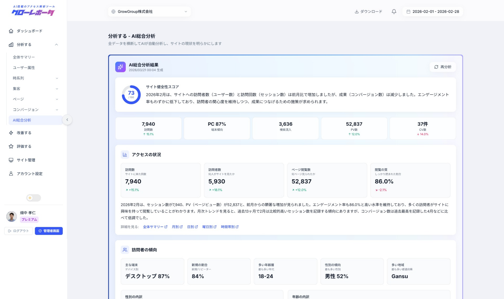
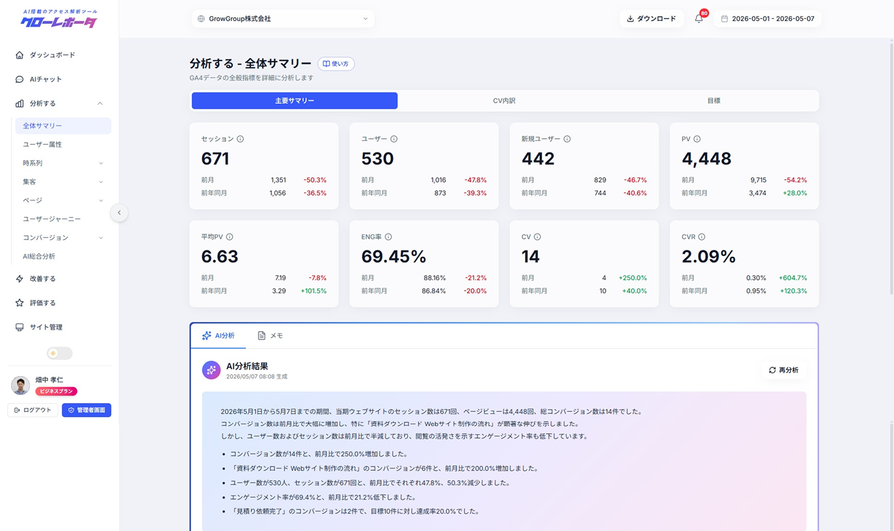
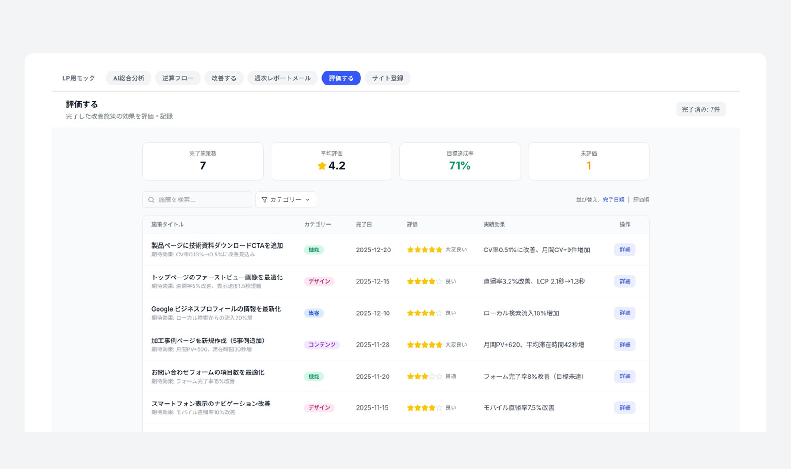

02
STRENGTH
「次に何をすべきか」まで
改善を提案。
一般的なツールはデータを見せるだけ。
GrowReporter はAIが考察・改善提案・
モックアップ画像まで一気通貫で生成。
「数字は見た、で、どうすれば？」に答えます。
※ GA4やLooker Studioでは改善提案はできません。
GA4 / Search Console のデータを AI が自動で分析。
改善提案からモックアップ、効果測定まで一気通貫。

＼ ご安心ください ／
GA4やSearch Consoleのデータに、AIを掛け合わせて"次の打ち手"まで導く。
分析・改善・評価のサイクルで、サイトを着実に成長させます。
GA4を開いてデータを読み解く必要はありません。
サイトを登録するだけで、AIが自動で分析し、
変化があればメールで通知。
必要な情報は向こうから届きます。
※ GA4やLooker Studioは自分でデータを見に行く必要があり、
専門知識がないと読み解けません。

一般的なツールはデータを見せるだけ。
GrowReporter はAIが考察・改善提案・
モックアップ画像まで一気通貫で生成。
「数字は見た、で、どうすれば？」に答えます。
※ GA4やLooker Studioでは改善提案はできません。

分析して終わり、改善して終わりにさせません。
改善施策の効果測定までをひとつのツールで完結。
担当者が継続的に成果を積み上げていける
仕組みを提供します。
※ 他のツールでは分析と改善が別々になり、
PDCAサイクルが途切れがちです。

分析から改善、効果測定まで。サイト運用を「続けられるもの」に変える機能群。
「先月のCV減少の原因は？」と聞くだけ。ChatGPT型UIでサイトデータを対話形式で分析できます。
GA4やSearch Consoleの複雑なデータをAIが自動で読み解き、日本語レポートにまとめます。
目的を選ぶだけでAIが改善内容と改善前後のモックアップ画像まで自動生成します。
大きな変化をAIが原因仮説つきでメール通知。週次・月次レポートも自動で届きます。
完了した施策に星評価でフィードバック。どの施策が効果的だったかを振り返り、次の精度を高めます。
Excel・PowerPoint形式にワンクリックで変換。グラフやAIコメント入りの報告資料が数秒で完成。
日別・チャネル別・キーワード別・ページ別など多角的に可視化。各ビューにAI考察がつきます。
成果に至ったユーザーの直前行動を逆引きで可視化。改善すべきページの優先順位が明確に。
メンバー招待と権限設定に対応。制作会社が複数クライアントをまとめて管理する運用にも。
※ AIチャット・AI総合分析・AI改善提案・改善の効果測定・レポート出力はビジネスプランのみの機能です。
GA4やLooker Studioでは実現できない、AIによる分析・改善・評価の一気通貫を実現します。

GrowReporterを導入すると、日々のサイト運用がこう変わります。
無料プランでアクセスデータを確認。ビジネスプランでAIの力を最大限活用。
お申し込み月は無料。翌月1日から課金開始。
含まれる機能
含まれる機能
アカウント・サイト登録まで最短5分。過去データもその日から分析が可能です。
グローレポーターに関するよくあるご質問にお答えします。
はい。サイトURLを登録してGoogleアカウントで接続するだけ。AIがわかりやすい日本語で教えてくれます。
無料プランはデータ閲覧+アラート。ビジネスプランでAI分析・改善提案・チャットが無制限に使えます。
Googleのセキュリティ基盤上で動作。データは暗号化保管。GA4のパスワードをお預かりすることは一切ありません。
コンサルは月10万円〜で月1回レポート。本サービスは月49,800円で好きなときにAI分析+改善提案+モックアップまで。
はい、いつでも即日解約可能。その月の末日までご利用いただけます。
メール招待で共有可能。閲覧/編集の権限分けも対応。ビジネスプランはメンバー無制限です。
アクセスデータに基づいて自由に質問できます。グラフや表を交えて回答してくれるので、レポート作成にもそのまま活用できます。
最短5分です。アカウント登録後、GA4/Search Consoleを連携するだけ。過去データもその日から分析可能です。

アカウント・サイト登録まで最短5分。
過去データもその日から分析やサイト改善が可能です。